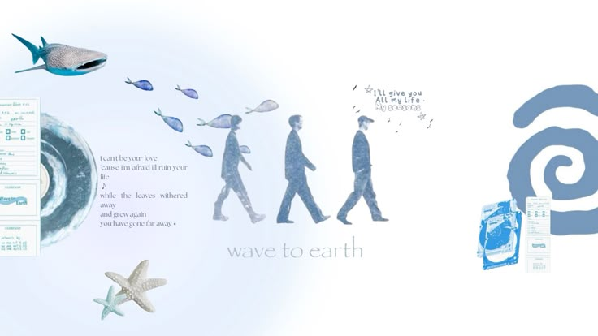
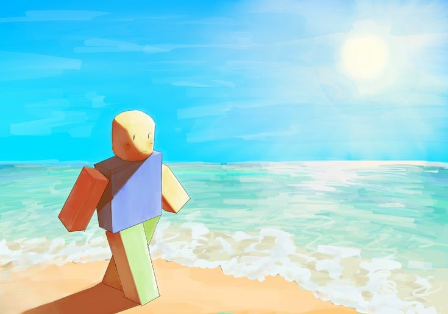
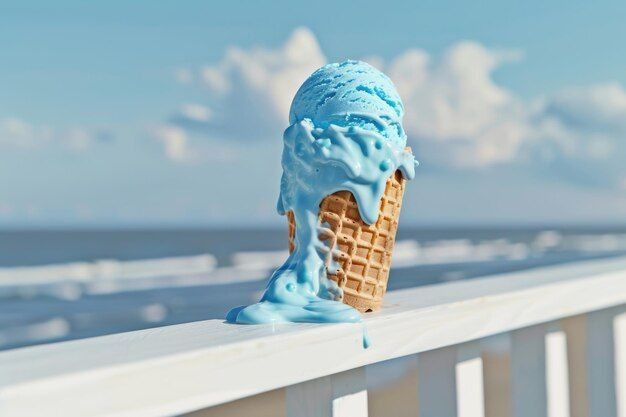
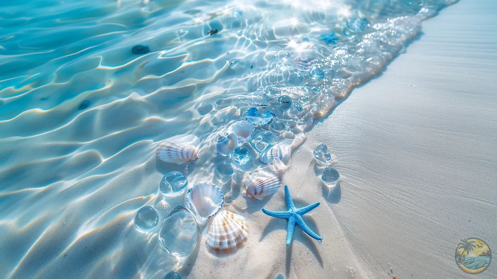
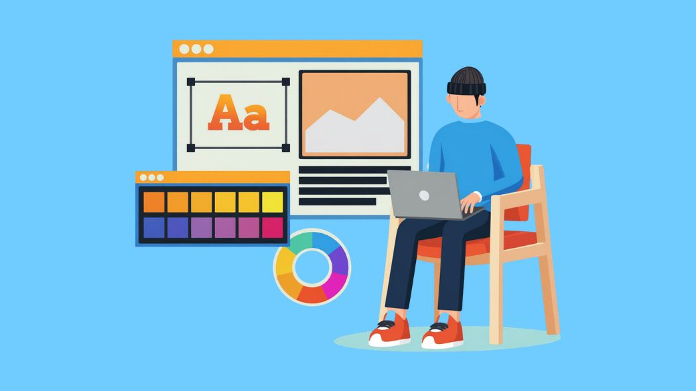

Movies & Series
Summer Strike is one of my favorite series. I like its peaceful story, cozy atmosphere, and the way it focuses on slowing down and enjoying life.
A little piece of my blue world.
I'm a 3rd year Computer Science student at Tarlac State University who enjoys exploring technology, discovering new things, and getting creative. When I'm not studying, you'll probably find me watching movies and series, playing games, listening to music, or working on something creative.
Summer Strike is one of my favorite series. I like its peaceful story, cozy atmosphere, and the way it focuses on slowing down and enjoying life.

Wave to Earth is one of my favorite artists. I enjoy their calm and dreamy sound, especially when I want to relax or enjoy a peaceful moment.
Sky blue is my favorite color. I love its soft and peaceful look because it reminds me of clear skies and calm days.

Roblox is one of my favorite games to play during my free time. I enjoy exploring different games and trying out the many experiences available on the platform.

Ice cream is one of my favorite treats. I enjoy its sweet and refreshing taste, especially when I want something simple and comforting.

I love ocean vibes because they feel calm, peaceful, and refreshing. I like the relaxing atmosphere of the sea, waves, and open blue skies.

Thanks for stopping by and exploring my little corner of the web.
Get in Touch